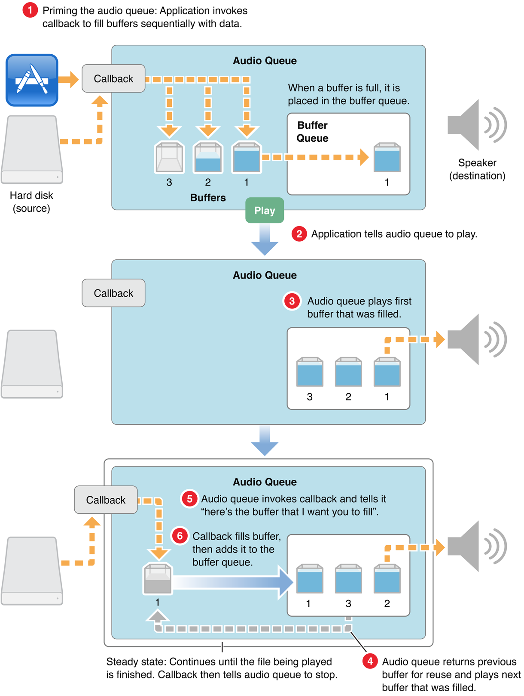
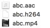

使用VideoToolbox硬编码H.264 使用VideoToolbox硬解码H.264 使用AudioToolbox编码AAC 在上一篇中，介绍了如何从麦克风采集声音并用AudioToolbox编码成AAC码流，这次是使用AudioToolbox来播放之前录制的AAC码流。
在iOS设备上播放音频，可以使用AVAudioPlayer（AVFoundation框架内），但是不支持流式播放。
Apple recommends that you use this class for audio playback unless you are playing audio captured from a network stream or require very low I/O latency.
本文尝试两种播放方式：
AudioServicesPlaySystemSound（音频小于等于30s）；AAC原始码流（又称为“裸流”）是由一个一个的ADTS frame组成的。他们的结构如下图所示。
了解AAC的码流结构，对Audio Queue Services的参数设置更清晰。
AudioServicesPlaySystemSoundAudioServicesCreateSystemSoundID创建系统声音
AudioServicesAddSystemSoundCompletion设置回调
AudioServicesPlaySystemSound开始播放
- (void)onClick:(UIButton *)button {
[self.mButton setHidden:YES];
NSURL *audioURL=[[NSBundle mainBundle] URLForResource:@"abc" withExtension:@"aac"];
SystemSoundID soundID;
//Creates a system sound object.
AudioServicesCreateSystemSoundID((__bridge CFURLRef)(audioURL), &soundID);
//Registers a callback function that is invoked when a specified system sound finishes playing.
AudioServicesAddSystemSoundCompletion(soundID, NULL, NULL, &playCallback, (__bridge void * _Nullable)(self));
// AudioServicesPlayAlertSound(soundID);
AudioServicesPlaySystemSound(soundID);
}
- (void)onPlayCallback {
[self.mButton setHidden:NO];
}
以下是API的限制
虽然AAC音频不在支持列表里面，但是经过测试，播放是可以的。
Audio Queue Services的播放步骤如下：

malloc: *** error for object 0x154e58498: incorrect checksum for freed object - object was probably modified after being freed. Set a breakpoint in malloc_error_break to debug.
Method cache corrupted. This may be a message to an invalid object, or a memory error somewhere else. objc[12730]: receiver 0x13fe1d4f0, SEL 0x10004e2d8, isa 0x100051828, cache 0x100051838, buckets 0x13fd86650, mask 0x7, occupied 0x1 objc[12730]: receiver 112 bytes, buckets 128 bytes objc[12730]: selector ‘fillBuffer:’ objc[12730]: isa ‘AACPlayer’ objc[12730]: Method cache corrupted.
这两个问题是出现在AudioQueueAllocateBuffer方法和fillBuffer的调用，而且是时而正常，时而崩溃。 先查看参数是否正确，通过xcode的debug工具，我们可以看到以下的数据：
(AudioStreamBasicDescription) $0 = {
mSampleRate = 44100
mFormatID = 1633772320
mFormatFlags = 0
mBytesPerPacket = 0
mFramesPerPacket = 1024
mBytesPerFrame = 0
mChannelsPerFrame = 1
mBitsPerChannel = 0
mReserved = 0
}
maxSize = 768
packetNums = 85
(mStartOffset = 0, mVariableFramesInPacket = 0, mDataByteSize = 23)
AudioStreamBasicDescription的参数很熟悉，因为就是我们上一篇的编码所设置的参数。
AudioQueueAllocateBuffer的参数audioQueue、buffer_size、audioBuffers都很正常，暂时排除存在问题的可能性。
fillBuffer方法中，有AudioFileReadPackets和AudioQueueEnqueueBuffer两个方法。AudioQueueEnqueueBuffer是把buffer放入到AudioQueue，参数检查没有问题。初步判断是AudioFileReadPackets存在问题。
通过多次调试，发现AudioFileReadPackets在偶然情况下回返回-60的情况，这时会导致崩溃。
通过google查到-60对应的是kAudioFilePositionError，回来检查AudioFileReadPackets的参数，发现参数没有初始化，每次调用的参数都不同。
查API文档知道AudioFileReadPackets的参数除了audioFileID和cache、packet长度，均为传入参数，参数是否初始化并不会影响。至此，fillBuffer方法的线索断了。
回顾了一下整体的流程，决定从malloc错误入手，在so上找到以下解释。
内存访问越界，怎么会和selector调用错误扯上关系？百思不得其解。
最后，几经波折终于找到罪魁祸首。就是以下这行代码：
audioStreamPacketDescrption = malloc(sizeof(audioStreamPacketDescrption) * packetNums);
当我打过一次audioStreamPacketDescrption，再打AudioStreamPacketDescrption的时候，Xcode会自动索引为audioStreamPacketDescrption，导致sizeof会计算出不同的大小。
PS：按理说对一个结构体的类和结构体的实例进行sizeof，应该是一样的大小（不算动态分配）。 这个并没有错，可是为了方便我把audioStreamPacketDescrption定义成指针了！
两个教训：
1、不要起和类名一样的变量；
2、指针和实例的区别要从名字即可分清；
本篇因为一个小失误，导致demo整整弄了6个多小时才完工。
播放比解码容易多，Audio Queue Services的使用就参照demo和上图的6个步骤，可以很清晰看懂，就不赘述。
顺便提一下，之前录制的aac音频和h264可以很方便的打包成mp4！看下图： 
只需简单的一行指令：
ffmpeg -i abc.h264 -i abc.aac -vcodec copy -f mp4 abc.mp4